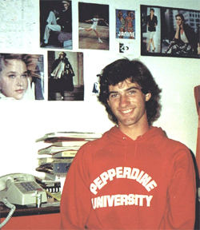
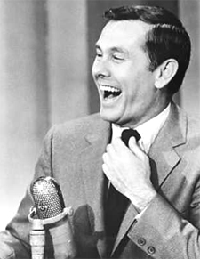
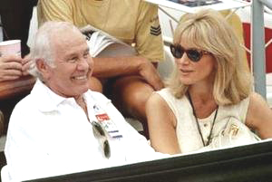
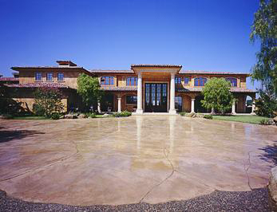
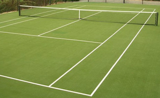
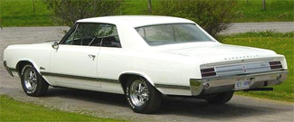

Previous: Momentum: An Introduction to the 5 Stages | 🏠 Mental Game Home | Next: Offense As Defense
My Tennis Morning with Johnny Carson
Comprehensive unified tennis knowledge base — Fundamentals, Stroke Analysis, Reference Library, and more
My Tennis Morning with Johnny Carson
Keith Hayes

Waiting in my dorm room in 1987 for that call from Johnny Carson. Note vintage phone.
In 1987, I had an unusual job. I studied art at Pepperdine University, but I worked weekends at the Malibu Racquet Club as a "hitter," or "tennis gigolo" as my dad enjoyed putting it.
Although I'd done some instructing in the summers, my assignment at the club was simply to be on hand when members needed a playing partner. Regardless of whom I played, I was instructed to hit every ball back as evenly and consistently as possible.
Some members were quite skilled, and hitting with them was an enjoyable challenge. Many weaker players, by contrast, seemed to get a perverse pleasure from hitting the ball as hard as they could - randomly - and watching me chase it. For $10 an hour, I let them play out their little fantasy.
Don't get me wrong; being a young tennis instructor and "hitter" in Malibu had its perks. I met many fascinating characters and, as one might suspect, I even got to play with a few celebrities of the times, sadly names few people would recognize today. Such is the way of Hollywood fame.
A few names are still recognizable. I played doubles once with Dustin Hoffman (a decent player, but nowhere near as good as he claimed to be). The highlight, though, was undoubtedly my morning with Johnny Carson.

Before Letterman and Leno, Johnny Carson--the greatest king of late night TV.
Some young readers may not even know the name, but Johnny Carson was, for three decades (1962 to 1992), the King of Late Night - the architect of late night - and host of the Tonight Show. Before Letterman, before Jay Leno, before Conan O'Brien, there was Johnny Carson - one of the most powerful men in Hollywood.
Carson was also known in the media as a huge tennis fan, and was often seen at Wimbledon in the TV celebrity shots, sitting with his gorgeous and much younger fourth wife Alex Maas.
It was a Saturday morning when the phone rang. The director of the Racquet Club had called to explain that their head pro, who had a weekly appointment with Carson, was out of town. He then gave me Johnny Carson's phone number and told me that Mr. Carson would be waiting for my call.
I studied the sheet of paper in my hand and then turned to my roommate. "Whoa. I'm holding Johnny Carson's phone number."
I dialed the number and the next voice I heard was unmistakably Johnny Carson's. In a friendly tone, he gave me detailed instructions to his beach house on Wildlife Road, a few miles north up Pacific Coast Highway.
When I cruised up to the address in my white '65 Olds Cutlass with one brown fender, the iron gates were closed and I could find no doorbell or buzzer. I peered inside, but the driveway curved around and disappeared into a thick tangle of tropical plants.

Johnny in the box with his fourth wife Alex Maas.
How, I wondered, would Johnny Carson ever know I was there? Before I could panic, a well-dressed servant emerged from the jungle and asked if he could help me. When I told him my purpose, he examined me - and my car - and then asked me to wait while he summoned his illustrious boss.
Although I took my tennis very seriously in those days, I had been carefully cultivating a blase sort of image on the court. On that particular Saturday, I wore a lavender bandanna to contain my long hair, an old t-shirt, orange and black soccer shorts, gray wool hiking socks and high-top Adidas. My rationale was simple: I thought it better to look like a slob and dazzle opponents with my tennis than vice-versa.
A moment later, The Man appeared. After looking me over in much the same manner as his servant, Johnny Carson greeted me warmly. I was immediately struck by how tidy he looked. He wore the latest Nike cross-trainers, crisp Fila shorts and, curiously, a tight black wife-beater tank top, tucked in, which showcased his deep tan to marvelous effect.

OK he had a pretty nice house up there on Wildlife Road in Malibu.
Mr. Carson then gestured toward the court, which - to my horror - was not down the curvy driveway but across the street and hidden behind another fence. How I longed to stroll the grounds of Johnny Carson's sprawling Malibu compound!
And yet, once we got across the street, I beheld the newest and most magnificent tennis court I had ever seen: synthetic grass - "Easy on the knees," explained Mr. Carson - softened with fine white sand. I had never imagined such a surface!
The court itself was sunken about four feet below ground level and surrounded by an ovular concrete border, evoking a small stadium. Beside the court stood a stately clubhouse, still under construction.
As we prepared to play, I tried to break the ice by telling Mr. Carson that the first time I'd ever watched his show was about five years earlier when my hero, Bjorn Borg, appeared as a guest.
I then confirmed the story by reminding him that the world champion grape catcher (with his mouth, of course) co-starred that night. Unfortunately, Mr. Carson either failed to remember the episode or he simply didn't want to discuss his show. Embarrassed, I resolved to stay quiet unless Mr. Carson spoke first.
Once we started hitting, Johnny Carson struck me as your typical club player: decent forehand, okay serve, okay volleys, and a shaky one-handed backhand. Still, he was fit and he moved remarkably well for his 62 years. He asked me if I wanted to play a set and I agreed.

Carson had one of the first ever synthetic grass courts.
Suddenly I had a problem. How, I wondered, does one compete against Johnny Carson?
Does one take it easy on him? Does one let him win, or does one "give him the real stuff?" I could never quite answer these questions and I ended up playing one of the most schizophrenic tennis sets of my life. I beat Johnny Carson 6-4, which seemed reasonable enough, but I still don't know whether I allowed him four games or if he earned them fair and square.
All I know is that I've never felt more awkward on a tennis court - and I couldn't help but imagine what Johnny Carson was thinking: Where did they find this guy? Is this homeless intermediate the best the Malibu Racquet Club could do?
After our set, we shook hands and I promptly apologized for my performance. "Of course," admitted Mr. Carson, "it's not like playing with John McEnroe" (a recent Malibu transplant with whom, it was well documented, Carson had played several times in the last year). "Every ball comes back perfectly."
I stared at my feet. "I suspect it does."
As I gathered my meager belongings and prepared to leave, the King of Late Night caught me off guard.
"Would you like to see the clubhouse, Keith?" he asked.

I believe I am the only person to gain entrance to the Carson compound in 1965 White Cutlass.
I paused for a moment and looked behind me. Was there another Keith nearby that I didn't know about? Flabbergasted, I accepted Mr. Carson's invitation. He led me inside the unfinished structure and handed me a cold soda from a small refrigerator. Through the framework, he showed me where the completed kitchen, bar, living room, and bathroom would soon be.
"And upstairs," he added proudly, "we're building an observation deck."
"Not too shabby," I had to confess.
Once the tour was over, Johnny Carson led me back out to the court.
"Thanks for coming out, Keith," said the Hollywood icon. "It was a pleasure." He then produced $40 - at the time, an astronomical sum to me - and placed it in my hand.
Although he never invited me to play again - nor did I expect him to - he took the time to show a sloppy, self-conscious kid with long hair and a beat-up Cutlass the inside of his spectacular new, albeit unfinished, clubhouse. And how cool was that?

USPTA instructor Keith Hayes attended Pepperdine University in the 1980s. There, he encountered Head Tennis Coach Allen Fox and became a counselor at his summer tennis camps, beginning a tennis teaching career - and a friendship with Allen - that has continued ever since. After Pepperdine, Keith went to work in the San Francisco Bay Area advertising and graphic design industries. Later he also became an English teacher.
As head coach of the Marin Catholic High School women's tennis team, Keith won back-to-back Division II North Coast Section titles in 2008 and 2009. When he's not teaching tennis, Keith continues to work as a freelance writer and designer. In addition to Tennisplayer.net, his stories have also appeared in TENNIS magazine.
Source: tennisplayer.net archive — My Tennis Morning with Johnny Carson.docx (John Yandell teaching library, 2002-2022). Extracted and rendered as HTML for Tennis Future Lab.